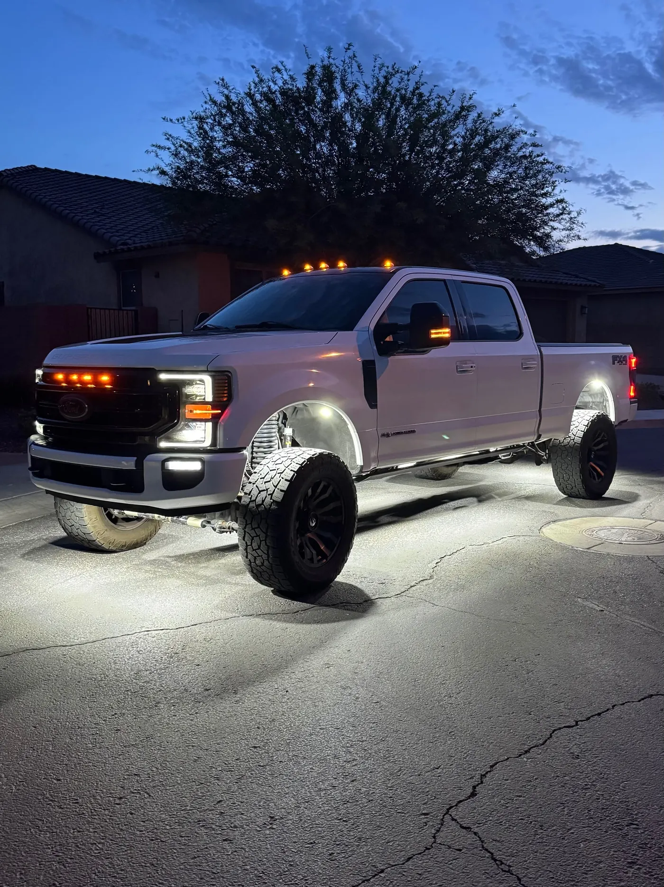

East Valley, AZ
Rock Light And Wheel Light Installs For The East Valley
ITM Customs is a lighting shop in Mesa, in the middle of the East Valley. Drivers from Gilbert, Chandler, Tempe, Queen Creek, San Tan Valley and Apache Junction drop the truck off in the morning and pick it up lit the same day. We don't do mobile installs, so every job happens at the shop, with a lifetime warranty on the install.
4.7★ from 35 reviews · installed in Mesa · kits ship anywhere
- Gilbert And Tempe
- 7 miles
- San Tan Valley
- 32 miles
- Installs
- At our Mesa shop

East Valley Cities We Serve
Every pin is a city our install customers drive in from. The lines all run to Mesa, because that's where every install happens.
- Tempe7 mi · University Drive
- Gilbert7 mi · Gilbert Road
- Chandler8 mi · Arizona Avenue
- Scottsdale11 mi · Scottsdale Road, McKellips Road
- Apache Junction16 mi · Apache Trail, Main Street
- Fountain Hills19 mi · SR-87 (Beeline Highway)
- Queen Creek23 mi · Ellsworth Road, Loop 202, US-60
- Gold Canyon27 mi · US-60
- San Tan Valley32 mi · SR-24, US-60
Miles are the driving distance to central Mesa. The shop address comes with your booking confirmation.
Dark Roads From Queen Creek To The Superstitions
The far East Valley gets dark fast. Hunt Highway, the roads around San Tan Mountain Regional Park and plenty of Queen Creek streets have no streetlights, and a lot of homes out there sit on dirt driveways. Pure white rock lights show you the ground around the truck when you pull in at night, and you can leave them on for the drive home.
Apache Junction and Gold Canyon sit right under the Superstitions. The lots at Lost Dutchman State Park and the trailheads off the Apache Trail are pitch black after sunset, which is where wheel-well lights earn their keep on a truck or a side-by-side.
Getting To The Shop From Your City
- Gilbert, Chandler and Tempe
- Under 10 miles on surface streets. Gilbert Road, Arizona Avenue and University Drive all run straight into Mesa.
- Queen Creek and San Tan Valley
- SR-24 to the Loop 202, then the US-60 west. About 23 miles from Queen Creek and 32 from San Tan Valley.
- Apache Junction and Gold Canyon
- The US-60 west, or Apache Trail into Main Street. About 16 miles from Apache Junction.
- Scottsdale and Fountain Hills
- Scottsdale Road or the Beeline Highway (SR-87) south. About 11 miles from Scottsdale and 19 from Fountain Hills.
Drop-off is between 9 and 10:30 in the morning, Monday to Saturday, and most installs take 6 to 8 hours. The shop address comes with your booking confirmation.
What East Valley Customers Get Installed
Each service has its own page with the lights, the prices and the photos.
What Lights And Installs Cost
Lights are priced on our site. Install labor depends on your vehicle and how many lights you want, so we quote it when we confirm your booking, before any work starts.
| What | Price | Details |
|---|---|---|
| Pure white rock lights | $45 to $55 | Pack of 4, 72 or 84-chip |
| 219-chip rock light kit | $240 to $920 | 4 to 24 lights |
| Switchback kit | $200 to $700 | 4 to 20 lights, white and amber |
| RGBW color kit | $205 to $705 | 4 to 20 lights |
| Wheel lights | $380 or $499 | 5-row or 10-row, all four wheels |
| Install labor | Quoted first | Agreed before we start |
Builds From Our Customers


East Valley Questions
Do you do mobile installs in Gilbert or Queen Creek?
No. Every install is done at our shop in Mesa. Drop off in the morning and pick up the same day.
How far is the shop from San Tan Valley?
About 32 miles to central Mesa, on SR-24 and the US-60. From Queen Creek it's about 23.
Which East Valley cities do you serve?
Tempe, Gilbert, Chandler, Scottsdale, Apache Junction, Fountain Hills, Queen Creek, Gold Canyon and San Tan Valley, plus Mesa itself. Anyone who can get the truck to Mesa is welcome.
Can I drop off on the way to work?
Yes. Drop-off is between 9 and 10:30 AM, Monday to Saturday, and most trucks are ready that evening.
Do you work on side-by-sides?
Yes. Trucks and side-by-sides are most of what we light, plus Jeeps, SUVs and cars.